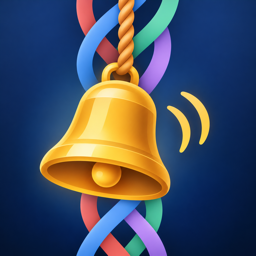

PealPeal
A logic puzzle based on English change ringing. Each row holds every bell once, and a bell moves at most one place from one row to the next. Fill in the grid and the bells ring.
A new peal every day, seven challenge types, and over 400 puzzles from four bells to eight. Free on iPhone.